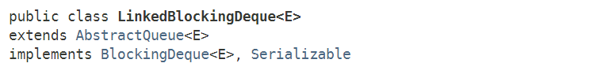
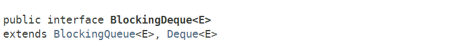
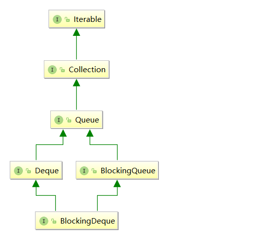
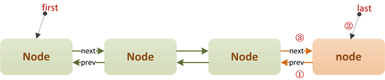
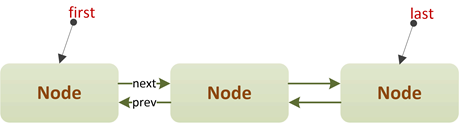
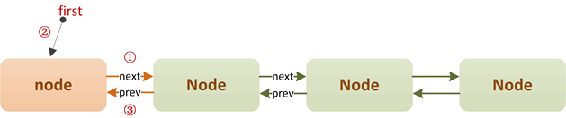
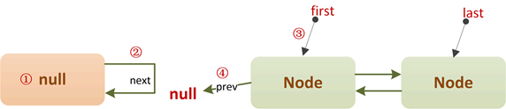
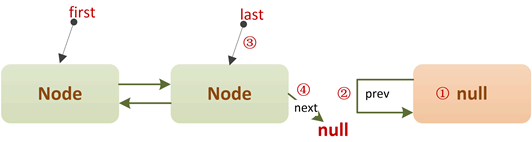

Java多线程进阶（三七）—— J.U.C之collections框架：LinkedBlockingDeque
一、LinkedBlockingDeque简介
LinkedBlockingDeque和ConcurrentLinkedDeque类似，都是一种双端队列的结构，只不过LinkedBlockingDeque同时也是一种阻塞队列，它是在JDK1.5时随着J.U.C包引入的，实现了BlockingDueue接口，底层基于双链表实现：

注意：LinkedBlockingDeque底层利用ReentrantLock实现同步，并不像ConcurrentLinkedDeque那样采用无锁算法。
另外，LinkedBlockingDeque是一种近似有界阻塞队列，为什么说近似？因为LinkedBlockingDeque既可以在初始构造时就指定队列的容量，也可以不指定，如果不指定，那么它的容量大小默认为Integer.MAX_VALUE。
BlockingDeque接口
截止目前为止，我们介绍的阻塞队列都是实现了BlockingQueue接口。和普通双端队列接口——Deque一样，J.U.C中也有一种阻塞的双端队列接口——BlockingDeque。BlockingDeque是JDK1.6时，J.U.C包新增的一个接口：

BlockingDeque的类继承关系图：

我们知道，BlockingQueue中阻塞方法一共有4个：put(e)、take()；offer(e, time, unit)、poll(time, unit)，忽略限时等待的阻塞方法，一共就两个：
队尾入队：put(e)
队首出队：take()
BlockingDeque相对于BlockingQueue，最大的特点就是增加了在队首入队/队尾出队的阻塞方法。下面是两个接口的比较：
| 阻塞方法 | BlockingQueue | BlockingDeque |
|---|---|---|
| 队首入队 | / | putFirst(e) |
| 队首出队 | take() | takeFirst() |
| 队尾入队 | put(e) | putLast(e) |
| 队尾出队 | / | takeLast() |
二、LinkedBlockingDeque原理
2.1 构造
LinkedBlockingDeque一共三种构造器，不指定容量时，默认为Integer.MAX_VALUE：
/**
* 默认构造器.
*/
public LinkedBlockingDeque() {
this(Integer.MAX_VALUE);
}
/**
* 指定容量的构造器.
*/
public LinkedBlockingDeque(int capacity) {
if (capacity <= 0) throw new IllegalArgumentException();
this.capacity = capacity;
}
/**
* 从已有集合构造队列.
*/
public LinkedBlockingDeque(Collection<? extends E> c) {
this(Integer.MAX_VALUE);
final ReentrantLock lock = this.lock;
lock.lock(); // Never contended, but necessary for visibility
try {
for (E e : c) {
if (e == null)
throw new NullPointerException();
if (!linkLast(new Node<E>(e)))
throw new IllegalStateException("Deque full");
}
} finally {
lock.unlock();
}
}
2.2 内部结构
LinkedBlockingDeque内部是双链表的结构，结点Node的定义如下：
/**
* 双链表结点定义
*/
static final class Node<E> {
/**
* 结点值, null表示该结点已被移除.
*/
E item;
/**
* 前驱结点指针.
*/
Node<E> prev;
/**
* 后驱结点指针.
*/
Node<E> next;
Node(E x) {
item = x;
}
}
字段first指向队首结点，字段last指向队尾结点。另外LinkedBlockingDeque利用ReentrantLock来保证线程安全，所有对队列的修改操作都需要先获取这把全局锁：
public class LinkedBlockingDeque<E> extends AbstractQueue<E>
implements BlockingDeque<E>, java.io.Serializable {
/**
* 队首结点指针.
*/
transient Node<E> first;
/**
* 队尾结点指针.
*/
transient Node<E> last;
/**
* 队列元素个数.
*/
private transient int count;
/**
* 队列容量.
*/
private final int capacity;
/**
* 全局锁
*/
final ReentrantLock lock = new ReentrantLock();
/**
* 出队线程条件队列（队列为空时，出队线程在此等待）
*/
private final Condition notEmpty = lock.newCondition();
/**
* 入队线程条件队列（队列为满时，入队线程在此等待）
*/
private final Condition notFull = lock.newCondition();
//...
}
2.3 队尾入队——put
先来看下，LinkedBlockingDeque是如何实现正常的从队尾入队的：
/**
* 在队尾入队元素e.
* 如果队列已满, 则阻塞线程.
*/
public void put(E e) throws InterruptedException {
putLast(e);
}
public void putLast(E e) throws InterruptedException {
if (e == null) throw new NullPointerException(); // 队列不能包含null元素
Node<E> node = new Node<E>(e); // 创建入队结点
final ReentrantLock lock = this.lock;
lock.lock();
try {
while (!linkLast(node)) // 队列已满, 则阻塞线程
notFull.await();
} finally {
lock.unlock();
}
}
put方法内部调用了putLast方法，这是Deque接口独有的方法。上述入队操作的关键是linkLast方法：
/**
* 将结点node链接到队尾, 如果失败, 则返回false.
*/
private boolean linkLast(Node<E> node) {
// assert lock.isHeldByCurrentThread();
if (count >= capacity) // 队列已满, 直接返回
return false;
// 以下是双链表的"尾插"操作
Node<E> l = last;
node.prev = l;
last = node;
if (first == null)
first = node;
else
l.next = node;
++count; // 队列元素加1
notEmpty.signal(); // 唤醒一个等待的出队线程
return true;
}
linkLast方法在队尾插入一个结点，插入失败（队列已满的情况）则返回false。插入成功，则唤醒一个正在等待的出队线程：
初始：
队尾插入结点node：

2.4 队首入队——putFirst
队首入队就是双链表的“头插法”插入一个结点，如果队列已满，则阻塞调用线程：
/**
* 在队首入队元素e.
* 如果队列已满, 则阻塞线程.
*/
public void putFirst(E e) throws InterruptedException {
if (e == null) throw new NullPointerException();
Node<E> node = new Node<E>(e);
final ReentrantLock lock = this.lock;
lock.lock();
try {
while (!linkFirst(node)) // 队列已满, 则阻塞线程
notFull.await();
} finally {
lock.unlock();
}
}
/**
* 在队首插入一个结点, 插入失败则返回null.
*/
private boolean linkFirst(Node<E> node) {
// assert lock.isHeldByCurrentThread();
if (count >= capacity) // 队列已满
return false;
// 以下是双链表的“头插”操作
Node<E> f = first;
node.next = f;
first = node;
if (last == null)
last = node;
else
f.prev = node;
++count; // 队列元素数量加1
notEmpty.signal(); // 唤醒一个等待的出队线程
return true;
}
初始：

队首插入结点node：

2.5 队首出队——take
队首出队的逻辑很简单，如果队列为空，则阻塞调用线程：
/**
* 从队首出队一个元素, 如果队列为空, 则阻塞线程.
*/
public E take() throws InterruptedException {
return takeFirst();
}
public E takeFirst() throws InterruptedException {
final ReentrantLock lock = this.lock;
lock.lock();
try {
E x;
while ((x = unlinkFirst()) == null) // 队列为空, 则阻塞线程
notEmpty.await();
return x;
} finally {
lock.unlock();
}
}
实际的出队由unlinkFirst方法执行：
/**
* 从队首删除一个元素, 失败则返回null.
*/
private E unlinkFirst() {
// assert lock.isHeldByCurrentThread();
Node<E> f = first;
if (f == null) // 队列为空
return null;
// 以下是双链表的头部删除过程
Node<E> n = f.next;
E item = f.item;
f.item = null;
f.next = f; // help GC
first = n;
if (n == null)
last = null;
else
n.prev = null;
--count; // 队列元素个数减1
notFull.signal(); // 唤醒一个等待的入队线程
return item;
}
初始：
删除队首结点：

2.6 队尾出队——takeLast
队尾出队的逻辑很简单，如果队列为空，则阻塞调用线程：
/**
* 从队尾出队一个元素, 如果队列为空, 则阻塞线程.
*/
public E takeLast() throws InterruptedException {
final ReentrantLock lock = this.lock;
lock.lock();
try {
E x;
while ((x = unlinkLast()) == null) // 队列为空, 阻塞线程
notEmpty.await();
return x;
} finally {
lock.unlock();
}
}
实际的出队由unlinkLast方法执行：
/**
* 删除队尾元素, 如果失败, 则返回null.
*/
private E unlinkLast() {
// assert lock.isHeldByCurrentThread();
Node<E> l = last;
if (l == null) // 队列为空
return null;
// 以下为双链表的尾部删除过程
Node<E> p = l.prev;
E item = l.item;
l.item = null;
l.prev = l; // help GC
last = p;
if (p == null)
first = null;
else
p.next = null;
--count; // 队列元素个数减1
notFull.signal(); // 唤醒一个等待的入队线程
return item;
}
初始：
删除队尾结点：

三、总结
LinkedBlockingDeque作为一种阻塞双端队列，提供了队尾删除元素和队首插入元素的阻塞方法。该类在构造时一般需要指定容量，如果不指定，则最大容量为Integer.MAX_VALUE。另外，由于内部通过ReentrantLock来保证线程安全，所以LinkedBlockingDeque的整体实现时比较简单的。
另外，双端队列相比普通队列，主要是多了【队尾出队元素】/【队首入队元素】的功能。
阻塞队列我们知道一般用于“生产者-消费者”模式，而双端阻塞队列在“生产者-消费者”就可以利用“双端”的特性，从队尾出队元素。
考虑下面这样一种场景：
有多个消费者，每个消费者有自己的一个消息队列，生产者不断的生产数据扔到队列中，消费者消费数据有快又慢。为了提升效率，速度快的消费者可以从其它消费者队列的队尾出队元素放到自己的消息队列中，由于是从其它队列的队尾出队，这样可以减少并发冲突（其它消费者从队首出队元素），又能提升整个系统的吞吐量。这其实是一种“工作窃取算法”的思路。